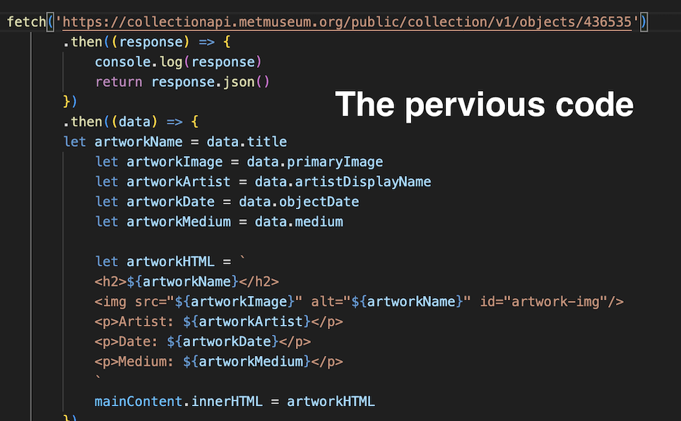
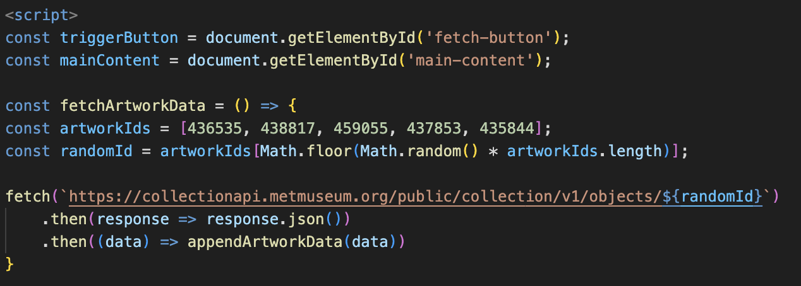
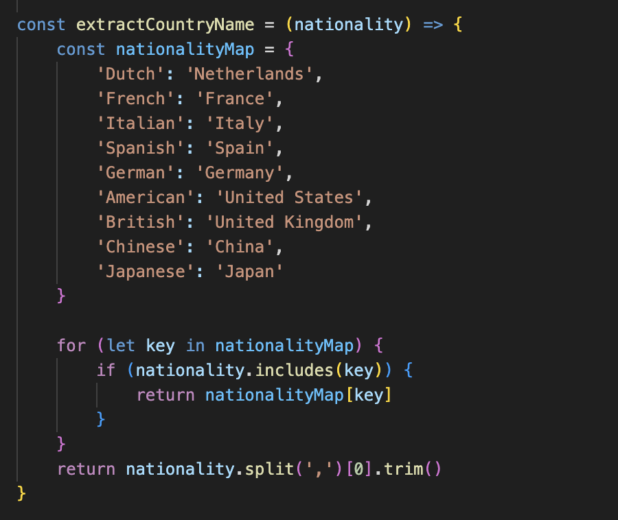

WWW as a Rube Goldberg machine
Idea
I originally intended to integrate art with history, but couldn't find a suitable API.
Ultimately, I decided to link famous paintings with the nationality of their artists.
My website will randomly display a painting and retrieve information for that country by detecting the artist's nationality.
Coding Process
The first issue I encountered while coding was with the API.
Initially, I found a link on Met's open-source website.
But when I copied it into my code, the webpage kept displaying error.

I verified the API link three times to ensure it was correct,
only to discover the error stemmed from my incorrect use of quotation marks.
The proper method is to use backticks.But a new problem has arisen.

The webpage still displays “Undefined.”
Random Function
I checked the JSON feedback.
In the JSON, I can see that information is being generated, but my webpage isn't receiving it.

I carefully compared the cocktail API used in class with Met's API.
I discovered that Met's API lacks a random feature.
Therefore, I need to specify the work's ID to display it.


Nationality API
I switched to the artist nationality-country association scheme,
successfully linking data between the Met Museum API and the REST Countries API
by converting nationalities to country names through mapping objects.

Add Image with different API Format
Images are more appealing. Following my professor's advice,
I decided to add flag images to the nationality section.
I referenced the classr demo and attempted to include an hdrul link, but it failed.
I found out that different API has different image format. In my case, I should use png link.